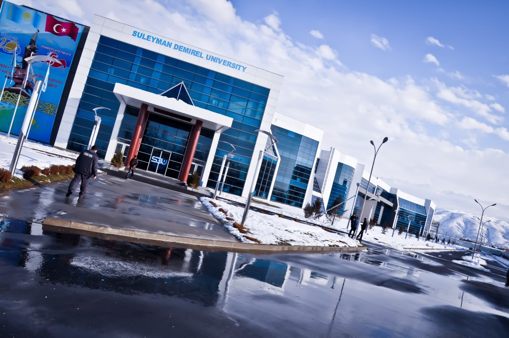

Social life of Suleyman Demirel University

 Almaty,region Karasay,city Kaskelen
Almaty,region Karasay,city Kaskelen



Suleyman Demirel University (SDU)
is one of the first private higher education institutions in Kazakhstan.
It is situated in the mountainous town of Kaskelen, 20km from Almaty
city center. The University was founded in 1996 and opened by
the former president of the country Nursultan Nazarbayev and the
ninth president of Turkiye Suleyman Demirel.
It is situated in the mountainous town of Kaskelen, 20km from Almaty
city center. The University was founded in 1996 and opened by
the former president of the country Nursultan Nazarbayev and the
ninth president of Turkiye Suleyman Demirel.